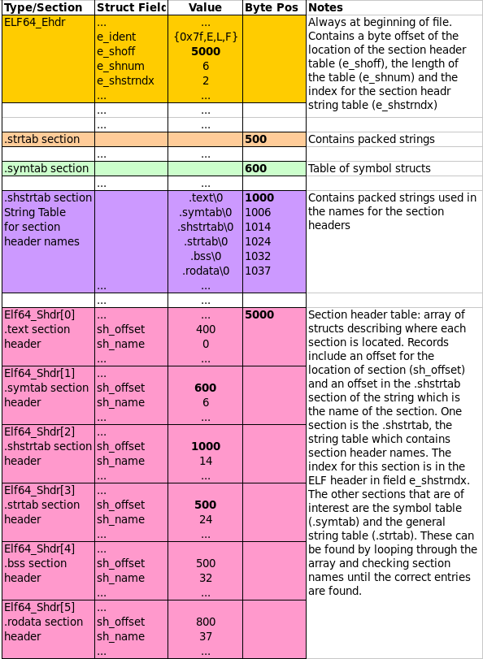
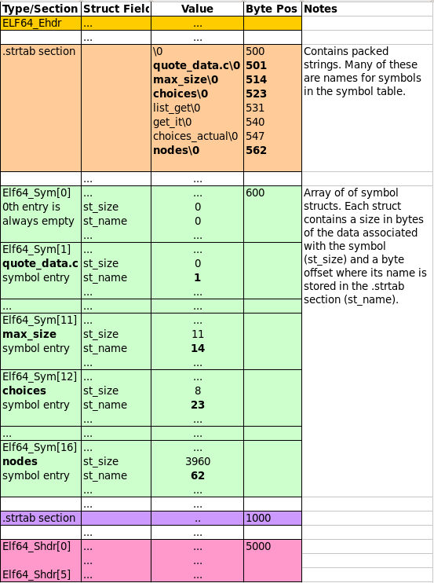

CSCI 2021 Project 4: Performance Optimization and Timing
- Due: 11:59pm Mon 01-May-2023
- Approximately 3.0-4.0% of total grade
- Submit to Gradescope
- Projects are individual work: no collaboration with other students is allowed. Seek help from course staff if you get stuck for too long.
CODE/TEST DISTRIBUTION: p4-code.zip
Video Overview: Not yet available
CHANGELOG:
- Fri Apr 21 03:11:01 PM CDT 2023
- Fixed several typos such as
incorrect totals for problem points and mention of a writing answers
in a writeup file which should instead be done in the comments in
matsquare_optm.c - Fri Apr 21 01:05:17 PM CDT 2023
- The missing
test-input/directory has been added to the codepack which should fix problems for those attempting to runmake test-prob2. Download a fresh copy of the code pack and copy this directory into your project directory.
1 Introduction
This assignment focuses on two aspects discussed in lecture over the last month.
- Program Optimization: The project pack provides a baseline implementation for a function and asks for a more performant version which runs faster. To do so, one must exploit knowledge of the memory hierarchy and processor architecture to complete the computations more quickly.
- Memory Mapping a Binary file in the ELF format and locating a specific section to access its contents.
2 Download Code and Setup
Download the code pack linked at the top of the page. Unzip this which will create a project folder. Create new files in this folder. Ultimately you will re-zip this folder to submit it.
| File | State | Notes |
|---|---|---|
Makefile |
Provided | Problem 1 & 2 Build file |
testy |
Provided | Testing script |
matsquare_optm.c |
EDIT | Problem 1 create and fill in optimized function definition |
matsquare_base.c |
Provided | Problem 1 baseline function to beat |
matsquare_benchmark.c |
Provided | Problem 1 main benchmark |
matsquare_print.c |
Provided | Problem 1 testing program |
matvec.h |
Provided | Problem 1 header file |
matvec_util.c |
Provided | Problem 1 utility functions for matrices/vectors |
test_matsquare.org |
Provided | Tests to check for memory issues in problem 1 |
showsym.c |
COMPLETE | Problem 2 template to complete |
test_showsym.org |
Testing | Problem 2 Testing script for showsym |
test-input/quote_data.o |
Data | Problem 2 ELF object file for input to showsym |
| Several other ELF and non-ELF files provided |
3 Problem 1: Squaring a Matrix
3.1 Overview
A problem that occasionally arises in numerical computing when working with Matrices (2D Arrays) is to compute the Square of a matrix. This is a special case of general matrix multiplication and students unfamiliar with this operation should study it to get some context for the present work.
Terminology can get a little confusing so keep the following in mind.
- A Square Matrix has equal numbers of rows and columns and can be multiplied by itself.
- Squaring a matrix, sometimes notated
M*M = M^2is multiplying a matrix by itself which can only be done if it is a square matrix (equal rows/columns).
The diagram below illustrates the result of squaring a matrix by multiplying it by itself.

Figure 1: 3 by 3 matrix M with colored elements along with result of squaring the matrix as M*M.
Note that that for each of the elements of the squared matrix, the elements are the result of a row multiplied by a column from the original matrix:
MatSq[i][j] = 0;
for(k = 0 to Mat.rows){
MatSq[i][j] += Mat[i][k] * Mat[k][j];
}
The file matsquare_base.c provides a baseline function that performs
this computation in a direct fashion as the above definition indicates
The algorithm uses the most "natural" approach of multiplying each row
by each column to produce the result in the for each part of the
squared result. As you survey the code, note the use of various
convenience macros such as MGET(mat,i,j) interact with the matrix
type used.
// Baseline version
int matsquare_BASE_NORMAL(matrix_t *mat, matrix_t *matsq) {
for(int i=0; i<mat->rows; i++){
for(int j=0; j<mat->cols; j++){
mset(matsq,i,j,0); // initialize to 0s
for(int k=0; k<mat->rows; k++){
int mik = mget(mat, i, k);
int mkj = mget(mat, k, j);
int cur = mget(matsq, i, j);
int new = cur + mik*mkj;
mset(matsq, i, j, new);
}
}
}
return 0; // return success
}
Note that the original matrix comes in as the parameter mat and the
result of squaring the matrix is stored in the parameter matsq.
While this algorithm is a direct translation of how humans would visually calculate the square of small matrices, it is unfortunately fairly slow when executing on most modern computing systems.
3.2 Optimize Matrix Squaring
The purpose of this problem is to write matsquare_OPTM() which is a
faster version of the provided matsquare_BASE() to calculate the
results.
Write your code in the file matsquare_optm.c.
Keep the following things in mind.
- You will need to acquaint yourself with the functions and types
related to matrices and vectors provided in the
matvec.hand demonstrated in the baseline function. Understanding the layout of the matrix in memory is essential to unlocking performance. - The goal of
matsquare_OPTM()is to exceed the performance ofmatsquare_BASE()by as much as possible. - To achieve this goal, several optimizations must be implemented and suggestions are given in a later section.
- You will need to document your optimizations in comments included
in the
matsquare_optm.cfile and provide timing results of running the optimized version. - Part of your grade will be based on the speed of the optimized code
on the machine
loginNN.cselabs.umn.edu. The main routinematsquare_benchmark.cwill be used for this.
Some details are provided in subsequent sections.
3.3 Evaluation on loginNN
The provided file matsquare_benchmark.c provides a benchmark for the
speed of squaring a matrix. It will be used by graders to evaluate the
submitted code and should be used during development to gauge
performance improvements.
The following machines may be used to evaluate the benchmark:
login01.cselabs.umn.edu OR csel-remote-lnx-01.cselabs.umn.edu login02.cselabs.umn.edu OR csel-remote-lnx-02.cselabs.umn.edu login03.cselabs.umn.edu OR csel-remote-lnx-03.cselabs.umn.edu login04.cselabs.umn.edu OR csel-remote-lnx-04.cselabs.umn.edu login05.cselabs.umn.edu OR csel-remote-lnx-05.cselabs.umn.edu login06.cselabs.umn.edu OR csel-remote-lnx-06.cselabs.umn.edu login07.cselabs.umn.edu OR csel-remote-lnx-07.cselabs.umn.edu
These are newer server machines with quite a few processors and are not virtualized making them ideal for performance benchmarks.
The scoring present in matsquare_benchmark.c is "tuned" to these
machines and will likely report incorrect results on other machines.
That means that codes should be tested on loginNN machines so that
no unexpected results occur after submission. Results reported should
be from one of loginNN.
The output of the matsquare_benchmark is shown below.
- SIZE: the size of the matrix being used. The benchmark always uses square matrices
- Runtimes for the 2 functions
- BASE: the time it takes for
matsquare_BASE()to complete. - OPTM: the time it takes for
matsquare_OPTM()to complete.
- BASE: the time it takes for
- SPDUP: the speedup of
matsquare_OPTM()overmatsquare_BASE()which isBASE / OPTM. POINTS: which are earned according to the following code:
double speedup_OPTM = (cpu_time_BASE / cpu_time_OPTM); // Scoring based on speedup double log2_speedup = log(speedup_OPTM) / log(2.0); // 2X speedup starts at 1 point double scale = size / SCALE_FACTOR; // Larger sizes give more points double points = log2_speedup * scale; // points = points < 0 ? 0.0 : points; // No negative pointsThis scheme, while a little involved, means that unless actual optimizations are implemented, 0 points will be scored. It is also weighted towards earning more points on for larger size matrices.
Below are several demonstration runs of matsquare_benchmark.
# BUILD/RUN ON NON-CSEL-KH1250-NN MACHINE: NOTE WARNINGS homeputer> make gcc -Wall -Werror -g -Og -c matsquare_print.c gcc -Wall -Werror -g -Og -c matvec_util.c gcc -Wall -Werror -g -Og -c matsquare_base.c gcc -Wall -Werror -g -Og -c matsquare_optm.c gcc -Wall -Werror -g -Og -o matsquare_print matsquare_print.o matvec_util.o matsquare_base.o matsquare_optm.o gcc -Wall -Werror -g -Og -c matsquare_benchmark.c gcc -Wall -Werror -g -Og -o matsquare_benchmark matsquare_benchmark.o matvec_util.o matsquare_base.o matsquare_optm.o -lm ... homeputer> ./matsquare_benchmark WARNING: expected host 'csel-remote-lnx-NN' but got host 'val' WARNING: timing results / scoring will not reflect actual scoring WARNING: run on host 'csel-remote-lnx-NN' for accurate results ==== Matrix Square Benchmark Version 2 ==== SIZE BASE OPTM SPDUP LOG2 SCALE POINTS 256 3.6133e-01 5.8248e-02 6.20 2.63 0.94 2.47 273 3.7156e-01 7.0970e-02 5.24 2.39 1.00 2.39 512 3.4430e+00 4.5978e-01 7.49 2.90 1.88 5.45 801 9.7616e+00 1.7626e+00 5.54 2.47 2.93 7.25 1024 4.3545e+01 3.6822e+00 11.83 3.56 3.75 13.37 RAW POINTS: 30.92 TOTAL POINTS: 30 / 30 WARNING: expected host 'csel-remote-lnx-NN' but got host 'val' WARNING: timing results / scoring will not reflect actual scoring WARNING: run on host 'csel-remote-lnx-NN' for accurate results # PARTIAL CREDIT RUN csel-remote-lnx-06> ./matsquare_benchmark ==== Matrix Square Benchmark Version 2 ==== SIZE BASE OPTM SPDUP LOG2 SCALE POINTS 256 4.0254e-01 1.0640e-01 3.78 1.92 0.94 1.80 273 3.8679e-01 1.0814e-01 3.58 1.84 1.00 1.84 512 3.7187e+00 1.1006e+00 3.38 1.76 1.88 3.29 801 1.2810e+01 2.9671e+00 4.32 2.11 2.93 6.19 1024 3.3382e+01 1.1026e+01 3.03 1.60 3.75 5.99 RAW POINTS: 19.12 TOTAL POINTS: 19 / 30 # FULL CREDIT RUN csel-remote-lnx-06> ./matsquare_benchmark ==== Matrix Square Benchmark Version 2 ==== SIZE BASE OPTM SPDUP LOG2 SCALE POINTS 256 3.4854e-01 4.2761e-02 8.15 3.03 0.94 2.84 273 3.5633e-01 5.2120e-02 6.84 2.77 1.00 2.77 512 3.4802e+00 3.5176e-01 9.89 3.31 1.88 6.20 801 1.1208e+01 1.3412e+00 8.36 3.06 2.93 8.99 1024 3.3112e+01 2.8701e+00 11.54 3.53 3.75 13.23 RAW POINTS: 34.03 TOTAL POINTS: 30 / 30
Note that it is possible to exceed the score associated with maximal performance (as seen in the RAW POINTS reported) but no more than the final reported points will be given for the performance portion of the problem. There may be Makeup Credit associate with sufficient speedups; if this occurs, output for the program will make it obvious that bonus credit has been awarded.
3.4 matsquare_print.c Testing Program
As one works on implementing optimizations in matsquare_OPTM(), bugs
which compute incorrect results are often introduced. To aid in
testing, the matsquare_print() program runs both the BASE and OPTM
versions on the same matrix and shows all results. The matrix size is
determined from the command line and is printed on the screen to
enable hand verification. Examples are below.
./matsquare_print 3 # run on 3 by 3 matrix ==== Matrix Square Print ==== Original Matrix: # original test matrix 3 x 3 matrix 0: 0 1 2 1: 3 4 5 2: 6 7 8 BASE Matrix Squared : # results for matsquare_BASE() 3 x 3 matrix 0: 15 18 21 1: 42 54 66 2: 69 90 111 OPTM Matrix Squared : # results for matsquare_OPTM() 3 x 3 matrix 0: 15 18 21 1: 42 59 66 2: 69 103 111 BASE/OPTM Element Comparison: [ i][ j]: BASE OPTM # elemnent by element comparison [ 0][ 0]: 15 15 # to help spot errors in results [ 0][ 1]: 18 18 # for matsquare_OPTM() [ 0][ 2]: 21 21 [ 1][ 0]: 42 42 [ 1][ 1]: 54 59 *** # NON-matching [ 1][ 2]: 66 66 [ 2][ 0]: 69 69 [ 2][ 1]: 90 103 *** # NON-matching [ 2][ 2]: 111 111
3.5 Optimization Suggestions and Documentation
Labs and lectures have covered several kinds of optimizations which
are useful to improve the speed of matsquare_OPTM(). These techniques
include:
- Re-ordering memory accesses to be as sequential as possible which favors cache (very important)
- Increasing potential processor pipelining by adjusting the destinations of arithmetic operations.
- Decreasing any unnecessary work such as memory accesses or arithmetic operations.
These should be sufficient to gain full credit though you are free to explore additional optimizations.
One handy realization most folks will reach is that it is useful to recognize a way to re-order the memory access pattern to favor cache. Recall that the most favorable access pattern for most matrix computations in a row-major programming environment like C is to work across rows. Below is a diagram which suggests one possible way to do this in the context of squaring a matrix. It favors repeated walking across a matrix in a row-wise fashion to avoid the stride required for column-wise access. Study this diagram carefully and consider implementing the approach illustrated as your first optimization. As discussed in lecture, if data is not getting to the processor, other optimizations that favor pipelining/superscalar execution will have no effect so focusing first on the memory access pattern is crucial.

Figure 2: Illustration of how to favor row-wise access to compute squared matrix. Computation of first row results are shown with the beginnings of the second row.
3.6 Grading Criteria for Problem 1 (55%) grading55
In addition to completing the code and the points associated with its performance, answer the questions that appear below the source code template to report your performance and your approach to optimizing.
| Weight | Criteria |
|---|---|
| Automated Tests | |
| 5 | No memory errors reported by Valgrind via make test-prob1 |
Manual Inspection of matsquare_optm.c |
|
| 30 | Performance of matsquare_OPTM() on loginNN.cselabs.umn.edu measured during grading |
| 10 | Answer for (B) Timing Table in comments of matsquare_optm.c |
| 10 | Answer for (C) Optimizations in comments of matsquare_optm.c |
| 55 | Problem Total |
4 Problem 2: showsym
4.1 Overview
The Executable and Linkable (ELF) File Format is the Unix standard for
binary files with runnable code in them. By default, any executable
or .o file produced by Unix compilers such as GCC produce ELF
files as evidenced by the file command.
>> gcc -c code.c >> file code.o code.o: ELF 64-bit LSB relocatable, x86-64, version 1 (SYSV), not stripped >> gcc program.c >> file a.out a.out: ELF 64-bit LSB shared object, x86-64, version 1 (SYSV), dynamically linked, interpreter /lib64/ld-linux-x86-64.so.2, for GNU/Linux 3.2.0
This problem explores the file format of ELF in order to show any
symbol table present. The symbol table contains information on
publicly accessible items in the file such as functions and global
data. The standard utility readelf shows human readable versions of
ELF files and the -s option specifically prints out the symbol table
section.
>> readelf -s test-input/quote_data.o
Symbol table '.symtab' contains 17 entries:
Num: Value Size Type Bind Vis Ndx Name
0: 0000000000000000 0 NOTYPE LOCAL DEFAULT UND
1: 0000000000000000 0 FILE LOCAL DEFAULT ABS quote_data.c
2: 0000000000000000 0 SECTION LOCAL DEFAULT 1
3: 0000000000000000 0 SECTION LOCAL DEFAULT 3
4: 0000000000000000 0 SECTION LOCAL DEFAULT 4
5: 0000000000000000 0 SECTION LOCAL DEFAULT 5
6: 0000000000000000 0 SECTION LOCAL DEFAULT 6
7: 0000000000000000 0 SECTION LOCAL DEFAULT 9
8: 0000000000000000 0 SECTION LOCAL DEFAULT 10
9: 0000000000000000 0 NOTYPE LOCAL DEFAULT 5 .LC0
10: 0000000000000000 0 SECTION LOCAL DEFAULT 8
11: 0000000000000000 11 FUNC GLOBAL DEFAULT 1 max_size
12: 0000000000000000 8 OBJECT GLOBAL DEFAULT 6 choices
13: 000000000000000b 60 FUNC GLOBAL DEFAULT 1 list_get
14: 0000000000000047 30 FUNC GLOBAL DEFAULT 1 get_it
15: 0000000000000010 16 OBJECT GLOBAL DEFAULT 6 choices_actual
16: 0000000000000020 3960 OBJECT GLOBAL DEFAULT 6 nodes
This problem re-implements this functionality in the showsym program
to instruct on some the format of the ELF file. It has the following
output.
>> gcc -o showsym showsym.c # compile showsym >> ./showsym test-input/quote_data.o # run on provided data file Symbol Table # output of program - 4296 bytes offset from start of file # location and size of symbol table - 408 bytes total size - 24 bytes per entry - 17 entries [idx] TYPE SIZE NAME # symbol table entries [ 0]: NOTYPE 0 <NONE> [ 1]: FILE 0 quote_data.c [ 2]: SECTION 0 <NONE> [ 3]: SECTION 0 <NONE> [ 4]: SECTION 0 <NONE> [ 5]: SECTION 0 <NONE> [ 6]: SECTION 0 <NONE> [ 7]: SECTION 0 <NONE> [ 8]: SECTION 0 <NONE> [ 9]: NOTYPE 0 .LC0 [ 10]: SECTION 0 <NONE> [ 11]: FUNC 11 max_size [ 12]: OBJECT 8 choices [ 13]: FUNC 60 list_get [ 14]: FUNC 30 get_it [ 15]: OBJECT 16 choices_actual [ 16]: OBJECT 3960 nodes > showsym test-input/quote_main.c # some files are not ELF file format Magic bytes wrong, this is not an ELF file > showsym test-input/ls # some ELF files don't have symbol tables Couldn't find symbol table
The output of showsym is a similar to readelf -s but abbreviated,
showing only information on public symbols in the ELF file.
4.2 ELF File References
It is recommended to do some reading on the structure of the ELF format as it will assist in coming to grips with this problem. As you encounter parts of the below walk-through of how to find and print the symbol table, refer to the following resources.
- Diagrams shown below provide some information about the basics of what is provided in each portion of the file and how some of the records relate to each other.
- Manual Pages: The manual page on ELF (found online or by typing
man elfin any terminal) gives excellent coverage of the structs and values in the file format. Essentially the entire format is covered here though there may be a few ambiguities. - Wikipedia: A good overview of the file format and has some extensive tables on the structs/values that comprise it.
- Oracle Docs: A somewhat more detailed and hyper-linked version of the manual pages.
Note that we will use the 64-bit ELF format only which means most of
the C types for variables should mention ELF64_xxx in them though
use of 32-bit integers may still apply via uint32_t.
4.3 Overall Approach
ELF files are divided into sections. Our main interest is to identify the Symbol Table section but this is done in several steps.
- Parse the File Header to identify the positions of the Section Header Array and Section Header String Table
- Search the Section Header Array and associated string table to find
the section named
.symtabwhich is the symbol table and.strtabwhich contains the string names of the symbol table. Note the position in the file of these two - Iterate through the Symbol Table section which is also an array of
structs. Use the fields present there along with the associated
string names in
.strtabto print each symbol and some associated information.
Since this is a binary file with a considerable amount of jumping and
casting to structs, it makes sense to use mmap() to map the entire
file into virtual memory. It is a requirement to use mmap() for this
problem. Refer to lecture notes, textbook, and lab materials for
details on how to set up a memory map and clean it up once
finished. In particular Lab 13 uses mmap() to parse binary files in
a way that is directly relevant to the present program.
4.4 ELF Header and Section Header Array
The initial bytes in an ELF file always have a fixed structure which
is the ELF64_Ehdr type. Of primary interest are the following
Identification bytes and types in the field
e_ident[]. These initial bytes identify the file as ELF format or NOT (will check for this).showsymshould check these "magic bytes" (first elements ofe_ident[]in header). If they match the expected values, proceed but if they are incorrect, print the message:ERROR: Magic bytes wrong, this is not an ELF file
and exit immediately.
- The Section Header Array byte position in the field
e_shoff. The Section Header Array is like a table of contents for a book giving positions of most other sections in the file. It usually occurs near the end of the file. - The index of the Section Header String Table in field
e_shstrndx. This integer gives an index into the Section Header Array where a string table can be found containing the names of headers.
The following diagram shows the layout of these first few important parts of an ELF file.

Figure 3: ELF File Header with Section Header Array and Section Header String Table.
4.5 String Tables, Names, Section Headers
To keep the sizes of structures fixed while still allowing variable length names for things, all the names that are stored in ELF files are in string tables. You can see one of these laid in the middle purple section of the diagram above starting at byte offset 1000. It is simply a sequence of multiple null-terminated strings laid out adjacent to one another in the file.
When a name is required, a field will give an offset into a specific
string table. For example, each entry of the Section Header Array has
an sh_name field which is an offset into the .shstrtab (the sh
is for "section header").. The offset indicates how far from the start
of the string table to find the require name.
- The
.shstrtabsection begins at byte 1000 so all name positions are1000 + sh_name - The 0th
.textsection hassh_name = 0; the string.text\0appears at position 1000. - The 1th
.symtabsection hassh_name = 6; the string.symtab\0appears at byte position 1006. - The 4th
.bsssection hassh_name = 32; the string.bss\0appears at byte position 1032.
The Section Header Array is an array of Elf64_Shdr structs. By
iterating over this array, fishing out the names from .shstrtab, and
examining names using strcmp(), the positions for the two desired
sections, .symtab and .strtab can be obtained via the associated
sh_offset field.
Note that one will need to also determine length of the Section Header
Array from the ELF File Header field e_shnum.
Also, on finding the Symbol Table section, note its size in bytes
from the sh_size field. This will allow you to determine the number
of symbol table entries.
4.6 Symbol Table and .strtab
Similar to the Section Header Array, the Symbol Table is comprised of
an array of Elf64_Sym structs. Each of these structs has a
st_name field giving an offset into the .symtab section where a
symbol's name resides. The following diagram shows this relationship.

Figure 4: ELF Symbol Table and associated String Table
While iterating over the table, print the following information.
- The index starting at 0 (note that index 0 will always contain a blank entry)
- The type of symbol which can be determined using the methods below
- The size from the
st_sizefield. This corresponds to the number of bytes a variable will occupy or the number of bytes of instructions for a function. - The name of the symbol or
<NONE>if the symbol's name has length 0. Use thest_namefield which is an offset into the.strtabwhere the name of the symbol is located.
To determine the symbol's type, make use of the following code
unsigned char typec = ELF64_ST_TYPE(symtable_entry[i].st_info);
This macro extracts bits from the st_info field and assigns them to
typec which will be one of the following defined variables.
- STT_NOTYPE : print type "NOTYPE" - STT_OBJECT : print type "OBJECT" - STT_FUNC : print type "FUNC" - STT_FILE : print type "FILE" - STT_SECTION : print type "SECTION"
An if/else or switch/case block to determine the type is best here.
4.7 Behavior in Error Cases
The following errors can occur during execution of showsym and
should result in the given error messages being printed.
Wrong Magic Bytes
showsym should check these "magic bytes" (first elements of
e_ident[] in header). If they match the expected values, proceed but
if they are incorrect, print the following example message
> ./showsym test-input/globals.c ERROR: Magic bytes wrong, this is not an ELF file
Missing Symbol Tables
During the search for the symbol table, it is possible that it is not
found. Such objects are usually executables that have been "stripped"
of a symbol table. After iterating through all sections in the Section
Header array and finding that no entry has the .symtab name print
the message in the example below.
> ./showsym test-input/naked_globals ERROR: Couldn't find symbol table
4.8 showsym Template
A basic template for showsym.c is provided in the code pack which
outlines the structure of the code along with some printing formats to
make the output match examples. Follow this outline closely to make
sure that your code complies with tests when the become available.
4.9 Grading Criteria for showsym (45%) grading45
Both binary and shell tests can be run with make test-p2
| Weight | Criteria |
|---|---|
| Automated Tests | |
| 10 | make test-prob1 runs 10 tests with Valgrind checking for memory problems |
make test-prob1 tesnum=5 to run individual tests |
|
| Manual Inspection | |
| 5 | Correctly sets up a memory map using open(), fstat(), mmap() |
| Correct unmap and close of file description at end of execution | |
| 5 | Sets a pointer to the ELF File Header properly |
Checks identifying bytes for sequence {0x7f,'E','L','F'} |
|
| Properly extracts the Section Header Array offset, length, string table index | |
| 10 | Sets up pointers to Section Header Array and associate String Table |
Loops over Section Header Array for sections named .symtab / .strtab |
|
| Properly uses SH String Table to look at names of each section while searching | |
Extracts offsets and sizes of .symtab / .strtab sections |
|
| 10 | Prints information on byte position of symbol table and its size |
| Sets up pointer to Symbol Table and associated String Table | |
| Loops over entries in Symbol Table printing name, size, type | |
Uses ELF64_ST_TYPE() to extract symbol type from st_info field |
|
| 5 | Style (Clean, readable code) |
| 45 | Problem Total |
5 Project Submission
5.1 Submit to Gradescope
In a terminal, change to your project code directory and type make zip which will create a zip file of your code. A session should look like this:
> cd Desktop/2021/p4-code # location of project code > ls Makefile matsquare_optm.c test-input/ ... > make zip # create a zip file using Makefile target rm -f p4-code.zip cd .. && zip "p4-code/p4-code.zip" -r "p4-code" adding: p4-code/ (stored 0%) adding: p4-code/matsquare_optm.c (deflated 72%) adding: p4-code/Makefile (deflated 49%) ... Zip created in p4-code.zip > ls p4-code.zip p4-code.zip- Log into Gradescope and locate and click Project 5' which will open up submission
- Click on the 'Drag and Drop' text which will open a file selection
dialog; locate and choose your
p5-code.zipfile - This will show the contents of the Zip file and should include your C source files along with testing files and directories.
- Click 'Upload' which will show progress uploading files. It may take a few seconds before this dialog closes to indicate that the upload is successful. Note: there is a limit of 256 files per upload; normal submissions are not likely to have problems with this but you may want to make sure that nothing has gone wrong such as infinite loops creating many files or incredibly large files.
- Once files have successfully uploaded, the Autograder will begin
running the command line tests and recording results. These are
the same tests that are run via
make test. - When the tests have completed, results will be displayed summarizing scores along with output for each batch of tests.
- Refer to the Submission instructions for P1 for details and pictures.
5.2 Late Policies
You may wish to review the policy on late project submission which will cost you late tokens to submit late or credit if you run out of tokens. No projects will be accepted more than 48 hours after the deadline.